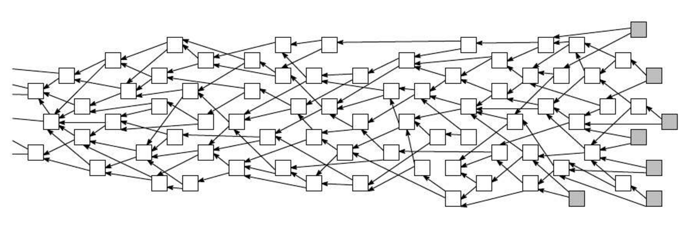
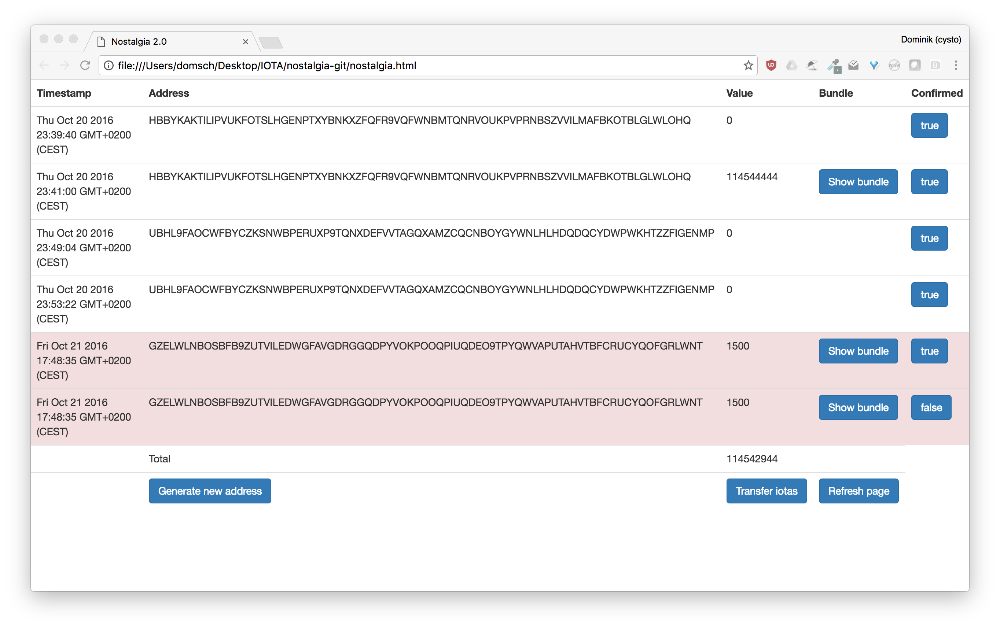
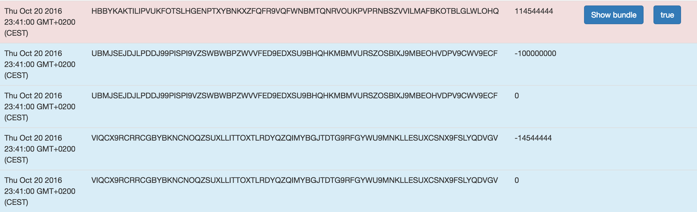

Introduction
Welcome to the Kittn API! You can use our API to access Kittn API endpoints, which can get information on various cats, kittens, and breeds in our database.
We have language bindings in Shell, Ruby, and Python! You can view code examples in the dark area to the right, and you can switch the programming language of the examples with the tabs in the top right.
This example API documentation page was created with Slate. Feel free to edit it and use it as a base for your own API’s documentation.
Authentication
To authorize, use this code:
require 'kittn'
api = Kittn::APIClient.authorize!('meowmeowmeow')
import kittn
api = kittn.authorize('meowmeowmeow')
# With shell, you can just pass the correct header with each request
curl "api_endpoint_here"
-H "Authorization: meowmeowmeow"
const kittn = require('kittn');
let api = kittn.authorize('meowmeowmeow');
Make sure to replace
meowmeowmeowwith your API key.
Kittn uses API keys to allow access to the API. You can register a new Kittn API key at our developer portal.
Kittn expects for the API key to be included in all API requests to the server in a header that looks like the following:
Authorization: meowmeowmeow
Kittens
Get All Kittens
require 'kittn'
api = Kittn::APIClient.authorize!('meowmeowmeow')
api.kittens.get
import kittn
api = kittn.authorize('meowmeowmeow')
api.kittens.get()
curl "http://example.com/api/kittens"
-H "Authorization: meowmeowmeow"
const kittn = require('kittn');
let api = kittn.authorize('meowmeowmeow');
let kittens = api.kittens.get();
The above command returns JSON structured like this:
[
{
"id": 1,
"name": "Fluffums",
"breed": "calico",
"fluffiness": 6,
"cuteness": 7
},
{
"id": 2,
"name": "Max",
"breed": "unknown",
"fluffiness": 5,
"cuteness": 10
}
]
This endpoint retrieves all kittens.
HTTP Request
GET http://example.com/api/kittens
Query Parameters
| Parameter | Default | Description |
|---|---|---|
| include_cats | false | If set to true, the result will also include cats. |
| available | true | If set to false, the result will include kittens that have already been adopted. |
Get a Specific Kitten
require 'kittn'
api = Kittn::APIClient.authorize!('meowmeowmeow')
api.kittens.get(2)
import kittn
api = kittn.authorize('meowmeowmeow')
api.kittens.get(2)
curl "http://example.com/api/kittens/2"
-H "Authorization: meowmeowmeow"
const kittn = require('kittn');
let api = kittn.authorize('meowmeowmeow');
let max = api.kittens.get(2);
The above command returns JSON structured like this:
{
"id": 2,
"name": "Max",
"breed": "unknown",
"fluffiness": 5,
"cuteness": 10
}
This endpoint retrieves a specific kitten.
HTTP Request
GET http://example.com/kittens/<ID>
URL Parameters
| Parameter | Description |
|---|---|
| ID | The ID of the kitten to retrieve |
Errors
The Kittn API uses the following error codes:
| Error Code | Meaning |
|---|---|
| 400 | Bad Request – Your request sucks |
| 401 | Unauthorized – Your API key is wrong |
| 403 | Forbidden – The kitten requested is hidden for administrators only |
| 404 | Not Found – The specified kitten could not be found |
| 405 | Method Not Allowed – You tried to access a kitten with an invalid method |
| 406 | Not Acceptable – You requested a format that isn’t json |
| 410 | Gone – The kitten requested has been removed from our servers |
| 418 | I’m a teapot |
| 429 | Too Many Requests – You’re requesting too many kittens! Slow down! |
| 500 | Internal Server Error – We had a problem with our server. Try again later. |
| 503 | Service Unavailable – We’re temporarially offline for maintanance. Please try again later. |
IOTA Introduction
What is IOTA?
IOTA is a revolutionary new transactional settlement and data transfer layer for the Internet of Things. It’s based on a new distributed ledger, the Tangle, which overcomes the inefficiencies of current Blockchain designs and introduces a new way of reaching consensus in a decentralized peer-to-peer system. For the first time ever, through IOTA people can transfer money without any fees. This means that even infinitesimally small nanopayments can be made through IOTA.
IOTA is the missing puzzle piece for the Machine Economy to fully emerge and reach its desired potential. We envision IOTA to be the public, permissionless backbone for the Internet of Things that enables true interoperability between all devices.
Glossary
Because IOTA introduces some rather new concepts to the Blockchain-space, we will list a couple of terms which are important to understand in order to fully grasp IOTA.
This Glossary is work in progress. If you are uncertain about a term, please suggest one here so we can add it to this glossary.
Generic Terms
- Peer to Peer Network: Decentralized network consisting of peers (or nodes) which are connected with each other and perform some form of data sharing with each other.
- Proof of Work: Algorithm which prevents Denial of Service and spam attacks on a network. Computationally hard puzzle, but easy to verify.
- Trinary: Alternative to binary, which consists of three states: true, false and unknown. Read more here.
- DAG: Directed Acyclic Graph. Is a specific data structure based on a graph without any directed cycles. Instead of having a single branch with nodes having only one edge, in a DAG there can be multiple branches. Refer to Wikipedia for more information.
IOTA Terms
- Tangle: A directed acyclic graph (DAG) as a distributed ledger which stores all transaction data of the IOTA network. It is a Blockchain without the blocks and the chain (so is it really a Blockchain?). The Tangle is the first distributed ledger to achieve scalability, no fee transactions, data integrity and transmission as well as quantum-computing protection. Contrary to today’s Blockchains, consensus is no-longer decoupled but instead an intrinsic part of the system, leading to a completely decentralized and self-regulating peer-to-peer network. 
- Seed: String consisting only of uppercase latin letters and 9’s which is used to access an account. A seed is like a private key/password. Keep it secure and don’t share it with anyone. If someone has access to your seed they can access your account. The maximum security level for seed is 81-trytes (81 chars), but you can choose longer seeds, the security of it just won’t increase.
- Tips:Transactions which have no other transactions referencing them.
- Confirm/Validate: In order to broadcast a new transaction in IOTA, you must first validate two previous transactions. This confirmation happens by validating the transaction trytes, the signatures and cross-checking for conflicting transactions as well as the completion of a Proof of Work puzzle.
- Branch/Trunk Transactions: Two transactions which were referenced and validated by another transaction.
- Bundle: Transactions which are bundled (or grouped) together during the creation of a transfer.
FAQ
Is IOTA inflationary? Can I mine IOTA’s?
All IOTA’s which will ever exist have been created with the genesis transaction. This means that the total supply of IOTA’s will always stay the same and you cannot “mine” IOTA’s. Therefore keep in mind, if you do Proof of Work in IOTA you are not generating new IOTA tokens, you’re simply verifying other transactions.
What is the total supply of IOTA?
The total supply of IOTA is (3^33-1) / 2, which equals to a total number of IOTA’s of 2779530283277761. IOTA is
specifically designed for machines, so this high supply makes IOTA optimal for tiny nanotransactions while still
keeping efficiency in mind. It also nicely fits into the MAX_SAFE_INTEGER value in JavaScript.
Whitepaper
The IOTA Whitepaper which describes the main technology behind IOTA - the Tangle - is available to read online. It goes into greater detail about the structure as well as the security of the Tangle:
Installation
Getting Started with Nostalgia
A simplistic User Interface (Nostalgia), is provided to help community members get started with using IOTA. The actual GUI wallet will be released in a few days, so if you don’t feel comfortable with Nostalgia, we suggest you to wait until the wallet is ready.
1. Download Nostalgia
As a first step, you should download Nostalgia from our GitHub:
git clone https://github.com/domschiener/nostalgia
If you are on Linux/Mac, you can simply open your console and clone the project:
Otherwise you can also simply download the zipped version from here: https://github.com/domschiener/nostalgia/archive/master.zip
2. Download the latest IRI
Now obviously in order to get running, you need the IOTA Core. At the time of writing, the latest version happens to be 1.1.0 which is available here:
For this IRI version you need to start completely from scratch, so either start in a new folder, or delete your
database (all files with .iri extensions).
3. Find Neighbors
In order to run IRI, you need to have neighbors which want to pair with you. The easiest and fastest way to get neighbors is through our Slack, where you can join the #nodesharing channel to find neighbors.
It should be noted that you have to share your own IP and port with your neighbors as well, because IOTA relies on mutual tethering for the data exchange. If you need help simply ask on Slack.
4. Start IRI
Once you have a list of neighbors, you have to start IRI.
On Linux/Mac
sudo java -jar IRI.jar YOURPORT udp://NODE1:PORT udp://NODE2:PORT
Now for Linux/Mac users, simply open up the terminal and type in:
On Windows
Follow the tutorial from here: http://iotasupport.com/headlessnode.shtml#headless-node-on-windows
5. Run Nostalgia
Now in order to run nostalgia, all you need to do is open up the nostalgia.html file in your web browser.
Now all you have to do is type in your seed and hit enter in order to login. You should now see an empty screen and you can start sending transactions and generating addresses.
If you have already made transactions, Nostalgia will mark sent transactions in red (as in the picture below), so that you know to which address you have sent tokens.

In addition to that, you can also take a look at the entire bundle by clicking on “Show Bundle”. The transactions form the bundle will be marked in blue. If you click on “Show Bundle” again they will disappear.

Documentation
API Introduction
The IOTA Java client makes it possible to interact with your local node and request certain information or actions to
be taken. Once your node is successfully setup, you can interface with it through port 14265 by passing along a JSON
object which contains a specified command; and upon successful execution of the command, returns your requested
information.
The main priority of the API as well as IRI itself is security. As such, anything that has to do with private keys is done client side. For this we have provided several libraries that take care of this, but you can implement this functionality yourself as well.
For your convenience, we have added concrete examples on how to use the API in Curl, Python and NodeJS. If you are using Javascript, you can simply follow along by using either XMLHttpRequest or jQuery. For NodeJS, please install the wonderful request npm package, as all our examples require the request package.
For the rest of this documentation it is assumed that you have the IOTA client running at port 14265 (or a port of
your choice, change your requests accordingly then).
Making Requests
{
"command": "YOURCOMMANDHERE"
}
All API calls need to be sent to http://localhost:14265 (if you are using the standard port) via a POST HTTP request. The data which will be sent is a JSON object which follows the same standard schema of:
Additional parameters are simply added as additional key-value pairs. If the command is successfully executed, your
requested information is returned as either an object or a stringified object (use json.parse or equivalent to turn it
into an object).
When making a request, make sure that the HTTP library you’re using defines the Content-Length of the data to be sent.
If this is not done automatically, manually add it via a header field e.g.
'Content-Length': Buffer.byteLength(JSON.stringify(command)).
CORS
CORS is enabled.
Errors
Fields
Here we list and describe all additional parameters which are required to be passed along for certain commands.
| Parameter | Type | Description |
|---|---|---|
seed |
string |
Tryte encoded string which contains the accounts seed. The seed must be correctly encoded trytes: only uppercase latin letters and 9’s. No other characters are allowed. The maximum security level is 81-trytes, but you can choose longer/shorter seeds. |
address |
string |
81-trytes long address of the recipient of a transaction. |
value |
string |
The quantity of IOTA’s which should be transferred. |
message |
string |
Tryte-encoded string which can contain arbitrary information and is sent alongside a transaction. The message value is publicly visible. The max value is 2187 trytes, which is 6561 trits (or roughly 1312 bytes). |
transaction / hash |
string |
Hash of a transaction. A single transaction hash is 81-chars long. |
trytes |
string |
The raw data of a transaction. |
bundles |
list |
Contains a list of transaction bundles. Bundles are basically linked, individual transactions which were created with a single transfer. They are uniquely identified by a 27-char hash. |
addresses |
list |
A list of addresses. A single address is 81-chars long. |
tags |
list |
The tag of a transaction. |
approvees |
list |
A list of transaction which were referenced by this transaction |
securityLevel |
int |
Specifies the security level of your transaction. Can either by 0 (for 81-trit security), 1 (for 162-trit security) and 2 (for 243-trit security). Lower security transactions are faster to generate. |
minWeightMagnitude |
int |
Specifies the amount of Proof of Work that will be carried out. Currently can only take the value 18. |